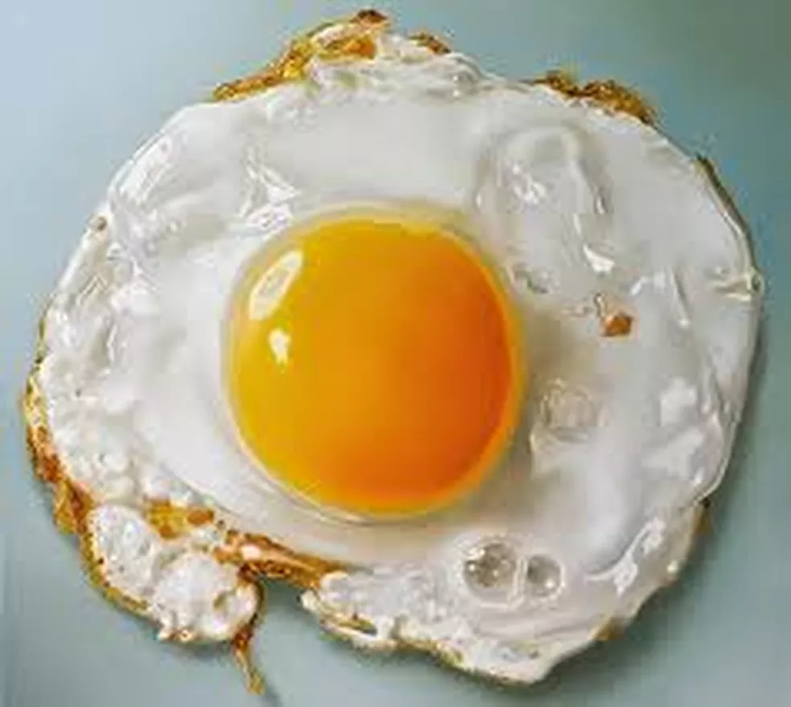

Receita De Ovo Frito Tradicional
- INGREDIENTES
- 1 ovo
- 1 colher (chá) de manteiga ou margarina
- Sal a gosto
- MODO DE PREPARO
- Derreta a manteiga numa frigideira.
- Dê uma batidinha na casca do ovo e quebre-o sobre a manteiga.
- Frite o ovo até que a borda fique ligeiramente dourada e a gema cozida.
- Salgue somente depois de pronto para que não figuem manchas brancas sobre a gema.
- Se você não tiver certeza de que os ovos estão frescos, quebre cada ovo sobre um prato ou xícara e só depois deixe-o escorregar para a frigideira.
- Se desejar dar um gosto mais picante aos ovos, use bacon.
- Para 4 ovos, utilize 2 ou 3 fatias de bacon, inteiras ou cortadas em pedaços.
- Deixe fritar até que a gordura derreta completamente e depois, acrescente os ovos um a um.
- Ao terminar o processo de fritura, sirva-se como preferir com um dos exemplos à seguir:
- SIRVA-SE
- Sirva o ovo com uma torrada para obter um café da manhã simples.
- Sirva um ovo frito com as sobras para uma refeição nutritiva.
- Coloque um ovo frito em sanduíches ou hambúrgueres para criar uma alternativa nutritiva e rica em proteínas.